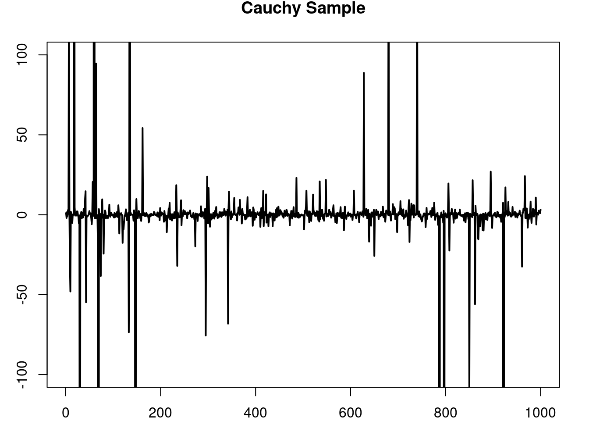
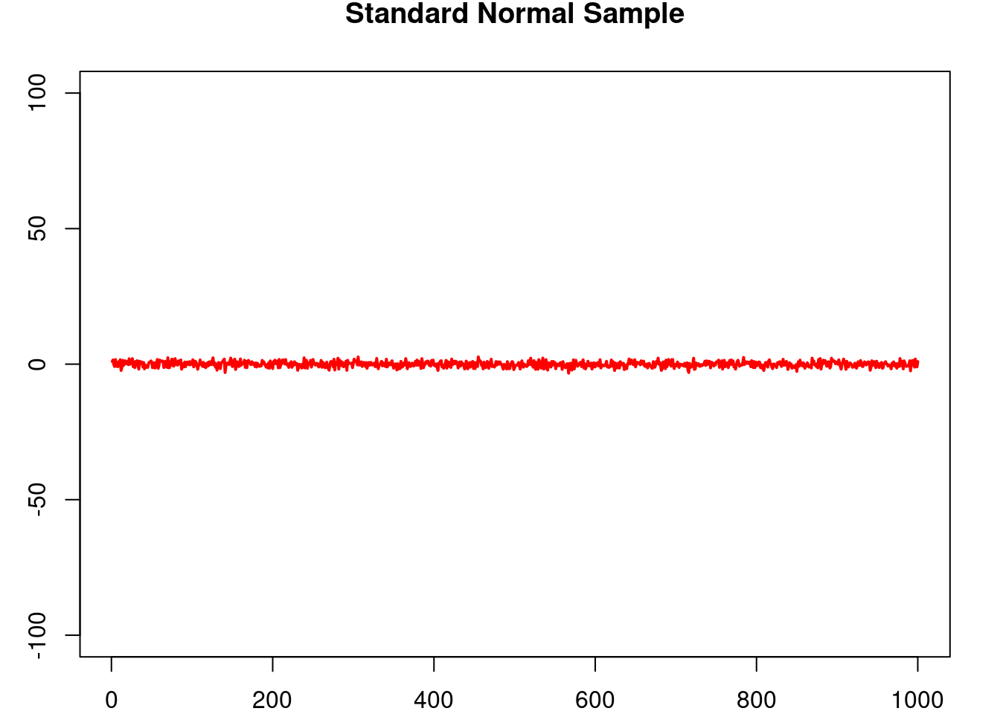
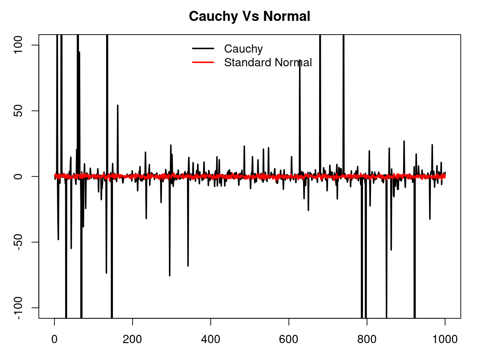

3 Common Distributions
3.1 Bernoulli
3.1.1 Definition
Let \(p\in(0,1)\) be a parameter. The bernoulli distribution is the discrete probability distribution that assigns a mass of \(p\) to \(1\), and a mass of \(1-p\) to \(0\); i.e. \(\mathbb{P}(\{1\})=p\) and \(\mathbb{P}(\{0\})=1-p\).
3.1.2 Model
The Bernoulli distribution is one of the most widely used distributions both in applied probability as well as theoretical probability. For example the Bernoulli distribution can be seen as a building block of other distributions such as the geometric distribution and the binomial distribution.
3.2 Geometric Distribution
There are two distributions which share the common name of geometric distribution. For reasons that will be clear later we call these two versions the number of failures version and number of trials version.
3.2.1 Definition
3.2.1.1 Number of failures
Let \(p\in (0,1)\). The geometric distribution (number of failures version) is the discrete distribution in \(\{0, 1, \dots\}\) such that \[ \mathbb{P}(X = k) = (1-p)p^k,\quad k\in \{0, 1, \dots\}. \]

\[ \mathbb{E}[X] = \frac{p}{1-p},\quad \mathbb{Var}[X] = \frac{p}{(1-p)^2}. \]
3.2.1.2 Number of trials
Let \(p\in (0,1)\). The geometric distribution (number of failures version) is the discrete distribution in \(\{1, \dots\}\) such that \[ \mathbb{P}(X = k) = (1-p)p^{k-1},\quad k\in \{1, \dots\}. \]
\[ \mathbb{E}[X] = \frac{1}{1-p},\quad \mathbb{Var}[X] = \frac{p}{(1-p)^2}. \]
3.2.2 Model
The geometric distribution is used to model discrete waiting times until the occurrence of the first success in a series of consecutive and independent trials (e.g. coin tosses). It is easily proved that the waiting times modeled by the geometric distribution have the memorylessness property, i.e. at any given time during the experiment the results of the past do not affect the outcomes of the present/future, in particular the distribution of the remaining number of trials until the first success given that \(k\) failures have been encountered so far is exactly the same as if the experiment were to be started all over again after, i.e. as if we decided to forget that \(k\) failures have been encountered so far.
3.2.2.1 Number of failures
The canonical model for this distribution is the following: let \(p\in(0,1)\) be a failure probability of some event. For example you can think of \(p\) as the probability that a coin toss is 'agila while \(1-p\) is the probability that it is sol. Let \(X\) be the (random) number of 'agilas until the first sol appears. Then \[ \mathbb{P}(X = k) = p^k(1-p). \]
3.2.2.2 Number of trials
The canonical model for this distribution is the following: let \(p\in(0,1)\) be a failure probability of some event. For example you can think of \(p\) as the probability that a coin toss is 'agila while \(1-p\) is the probability that it is sol. Let \(X\) be the (random) number of trials until the first sol appears. Then \[ \mathbb{P}(X = k) = p^{k-1}(1-p). \]
This distribution can thought of as the discrete version of the exponential distribution. To see this you can compare \(\mathbb{P}(X>k)\) and \(\mathbb{P}(Y> y)\) where \(X\) is geometrically distributed and \(Y\) is exponentially distributed. We can also compare their canonical models. They both model a probabilistic dynamic in which the future is independent of the past.
3.3 Exponential Distribution
3.3.1 Definition
The exponential distribution of parameter \(\lambda>0\) is the continuous distribution with density \[ \lambda e^{-\lambda x}. \]

3.3.2 Model
The exponential distribution is used to model continuous waiting times until the first ocurrence of some event, where intuitively such event is thought to occurr with some small probability in any given ``infinitesimal’’ period of time and independently of all other times. Thus, the waiting times modeled by the exponential distribution have the memorylessness property, i.e. at any given time during the experiment the results of the past do not afect the outcomes of the present/future, in particular the distribution of the remaining waiting time until the first occurence of the event given that we have already waited for \(t\) units of time is exactly the same as if we started the experiment all over again, i.e. as if we decided to forget that we had already waited \(t\) units of time.
In genomics this distribution is widely used in different modelling scenarios. For example exponential random variables are used to model degradation and/or production times of molecules in biochemical models, they are also used in Population Genetics to model birth/death times of individuals, or the occurrence of new mutations over time and/or along the genome.
3.3.3 Important properties
3.3.3.1 Sum of exponentials
Let \(Y_1,\dots,Y_n\) be exponentially distributed of parameter \(\lambda\). Then their sum \[ \sum_{k=1}^n Y_k \] has Gamma distribution of parameters \(\alpha = n-1\) and \(\beta = \lambda\).
3.3.3.2 Minimum of exponentials
Let \(Y_1,\dots,Y_n\) be exponentially distributed of parameters \(\lambda_1,\dots,\lambda_n\), and let \[ M = \min_{1\leq k\leq n} Y_k \] be their minimum value, and \[ I = \arg\min_{1\leq k\leq n} Y_k \] be the index on \(\{1,\dots,n\}\) that achieves the minimum. Then \(M\) and \(I\) are independent and \(M\) is exopnentially distributed of parameter \(\lambda_1+\dots +\lambda_n\) while the distribution of \(I\) is given by \[ \mathbb{P}(I=k) = \frac{\lambda_k}{\lambda_1+\dots +\lambda_n} \text{ for }1\leq k\leq n. \]
3.4 Binomial Distribution
3.4.1 Definition
The bionomial distribution of parameters \(p,n\) is the discrete distribution with values in \(\{0,\dots,n\}\) such that, for \(k\in\{0,\dots, n\}\), \[ \mathbb{P}\left(\{k\}\right) = \binom{n}{k}p^k(1-p)^{n-k}. \] An easy way to corroborate that \(\sum_{k=0}^N \mathbb{P}\left(\{k\}\right) = 1\) is to remember the expansion of \(1 = (p + 1-p)^N\).
3.4.2 Model
The binomial distribution models the number of sucesses among \(n\) independent trials, each with success probability \(p\). The typical example is to count the number of tails in a series of \(n\) coin tosses, where each coin toss is tails with probability \(p\) (if \(p=0.5\) then the coin toss is said to be fair).
An alternative way to consruct the binomial distribution is to consider \(n\) Bernoulli random variables, say \(X_1,\dots,X_n\), of parameter \(p\), and then set \(Y=\sum_{k=1}^n X_k\). \(Y\) is binomially distributed of parameters \(n,p.\)
3.5 Poisson Distribution
3.5.1 Definition
Let \(\lambda > 0\). The Poisson distribution is the the discrete distribution given by \[ \mathbb{P}({n}) = e^{-\lambda} \frac{\lambda^n}{n!},\quad \forall n\in\mathbb{Z}^+=\{0,1,2,\dots\} \]

3.5.2 Model
The Poisson distribution appears in two intuitively equivalent situations:
- As the limit of a bionmial random variable of parameters \(n\) and \(p\), as \(n\to\infty\) and \(np\to\lambda\). I.e. as the random number of successes of an ‘infinite’ number of independent trials (\(n\to\infty\)) each with an ‘infinitesimall’ probability of success (\(np\to\lambda\)).
- The Poisson distribution of parameter \(\lambda t\) can be seen as the number of occurrences in a time interval \([0,t]\) of an event whose waiting times between two consecutevie occurrences are exponentialy distributed of parameter \(\lambda\).
The Poisson distribution is the first option to model any random event that is known to have values in \(\{0,1,2,\dots\}\). In genomics this distribution can be used to model the number of mutations in the genome, or in a given population that had evolved over a period of time, or to model the number of children that each individual in a populatin produces in the next generation, etc.
3.6 Gamma Distribution
3.6.1 Definition
The Gamma distribution of parameters \(\alpha>0,\beta>0\) is the continuous distribution with density \[ f(x \vert \alpha,\beta) = \frac{\beta^\alpha}{\Gamma(\alpha)} x^{\alpha-1}e^{-\beta x}. \] where \(\Gamma\) is the function defined by \[ \Gamma(s) = \int_0^\infty t^{s-1} e^{-t} dt. \]
Note from the the definition of \(f\), and also visualize it in the graphs above, that when \(\alpha=1\) then we recover the exponential distribution.
3.6.2 Model
The Gamma distribution is used to model random quantities that are known to be in \(\mathbb{R}^+\) and that show departures from the exponential distribution. Observe that the tail of the distribution decays exponentially.
3.7 Beta Distribution
The Gamma distribution of parameters \(\alpha>0,\beta>0\) is the continuous distribution with density \[ f(x \vert \alpha,\beta) = \frac{1}{B(\alpha,\beta)} x^{\alpha-1}(1-x)^{\beta-1}, \] where \(B(\alpha,\beta)\) is the Beta function given by \[ B(\alpha,\beta) = \frac{\Gamma(\alpha+\beta)}{\Gamma(\alpha)\Gamma(\beta)}. \]

3.7.1 Model
The Beta distribution is a very versatile distribution to model random quantities in the interval [0,1]. For example the Beta distribution can be used to model frequencies or probabilities.
3.8 Normal Distribution
3.8.1 Definition
The normal distribution of parameters \(\mu\in\mathbb{R}\) (the mean) and \(\sigma>0\) (the standard deviation)
is the continuous distribution with density
\[
f(x \vert \mu,\sigma) = \frac{1}{\sigma\sqrt{2\pi}}e^{-\frac{(x-\mu)^2}{2\sigma^2}}
\]

3.8.2 Model
The normal distribution is one of the most central distributions. Thanks to the Central Limit Theorem this distribution appears everywhere, specially when the variables that we are modelling can be interpreted as averages over many copies of subyacent independent random variables. This also explains why a lot of work in statistics is specialized to the study of this distribution.
3.8.3 Important properties
3.8.3.1 Location/scale family
Let \(X\) be a normall distributed random variable with mean \(\mu\) and variance \(\sigma^2\). Then, for any \(a\in\mathbb{R}\) and \(b>0\) the random variable \(b(X+a)\) is normally distibuted with mean \(b(\mu+a)\) and variance \(b^2\sigma^2\).
3.8.3.2 Independence of normal distributions
Let \((X,Y)\) be a random vector with (joint) normal distribution, then \[ X\perp Y \text{ iff } \mathbb{Cov}(X,Y) = 0. \]
3.8.3.3 Sum of indpendent normal distributions
Let \(Y_1,\dots,Y_n\) be \(n\) independent random variables with normal distribution of parameters \((\mu_1,\sigma_1), \dots, (\mu_n, \sigma_n)\). Then the random variable \(\sum_{k=1}^n Y_k\) is Normally distributed of parameters \(\mu = \sum_{k=1}^n \mu_k\) and \(\sigma^2 = \sum_{k=1}^n \sigma_k^2\). Of course from this property we obtain that the sample mean of a sample of i.i.d normal distributions \((\mu,\sigma)\) \[ \tilde{X}=\frac{1}{n}\sum_{k=1}^n X_k \] is normally distributed with mean \(\mu\) and variance \(n\sigma^2\).
3.8.3.4 Sum of squares
Let \(Y_1,\dots,Y_n\) be \(n\) independent normally distributed radom variables with mean \(0\) and variance \(1\). Then the random varible \(\sum_{k=1}^n X_k^2\) has Chi-squared distribution with \(n\) degrees of freedom.
3.8.3.5 Sample mean and sample standard deviation
Let \(Y_1,\dots,Y_n\) be \(n\) independent normally distributed radom variables with mean \(\mu\) and variance \(\sigma\). Then the sample mean \[ \tilde{X} \] and the sample standard deviation \[ S = \frac{1}{n-1}\sum_{k=1}^n (X_k-\tilde{X})^2 \] are independent and the ratio \[ T = \frac{\tilde{X}- \mu}{S/\sqrt{n}} \] has the t-student distribution of \(n-1\) degrees of freedom.
3.9 Student’s t-distribution
3.9.1 Definition
The students t-distribution of parameter \(\nu>0\) (degrees of freedom) is the continuous probability distribution with density \[ f(x\vert \nu) = \frac{\Gamma(\frac{\nu+1}{2})}{\sqrt{\nu\pi}\Gamma(\nu/2)} \left(1+ \frac{x^2}{\nu}\right)^{-\frac{\nu+1}{2}} \]
3.9.2 Model
The students t-disribution typically only appears in the statistical test comparing the sample means of two populations which are assumed to have the normal distribution.
On the other hand, the students t-distribution can be used to model random quantities which show a similar overall behaviour as a normally distributed random variable, but that at the same time allow for the ocurrence of extreme (catastorphic) events, i.e. events where the value of the random quantity is realy large, which occur with low probability but that still are not ‘impossible’ to see as is the case with normally distributed random variables whose tails decay rather fast. In this regard, a typical choice is the Cauchy distribution (the case when \(\nu=1\) ) which has infinite variance.
3.9.3 Cauchy VS Normal
See how the tails of the Cauchy distribution are much ‘fat’ that those of the normal distribution, but they both have a ‘bell’-like form. See a sequence of independent samples of each distribution, observe how the overall behaviour seems to be quite similar, but from time to time the Cauchy distribution presents large values.
